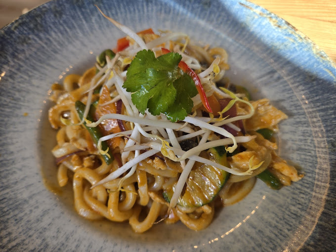
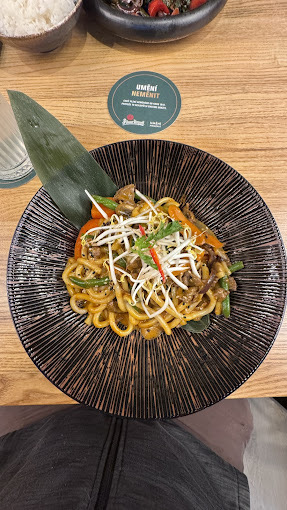

Speciality
Ochutnejte naše
Ochutnejte naše
nejoblíbenější jídla

PET MUN
Originální závitek — jemné kační maso, sladkokyselé mango, křupavá okurka, jarní cibulka a houby shiitake v tenké palačince
Specialita
Udon Chiang Mai
Jedinečné spojení Japonska a Thajska — udon nudle v krémové kokosové kari polévce s kurkumou a severo-thajským kořením
Specialita
Bun Ngan
Grilovaná kachna s rýžovými nudlemi, salátem z asijských bylin a domácí sójovou omáčkou
185 Kč
Kaeng Ped
Červené thajské kari — dokonalá rovnováha sladké, kyselé, slané a pikantní chuti v kokosovém mléce
Specialita